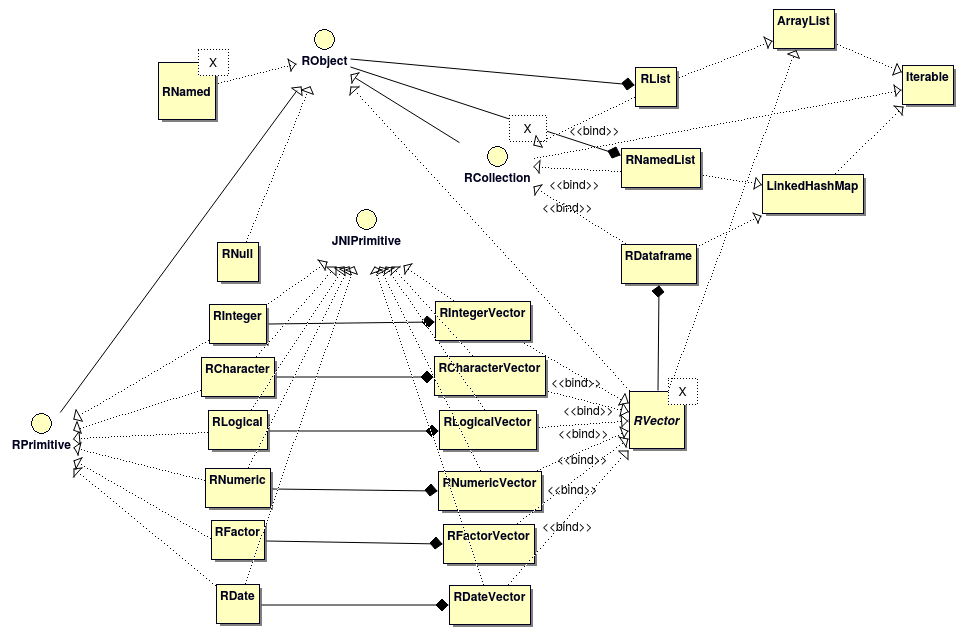

R6-generator-datatypes.RmdR and Java have quite different philosophy on datatypes that mean that loss less round tripping of data through the limited expressibility of the JNI bridge is a non trivial exercise. This is why a code generation library is valuable as it removes the need for developers to understand the grim complexity of the details. The following areas proved to be the most difficult:
By inspecting the Java code at compilation time, and by imposing constraints on the types of data transferred between R and Java, it is possible to use a combination of convention, data-type coercion, and type checking to ensure that inputs to Java code from R are type safe, and (almost) 100% faithful copies of their R equivalents and vice-versa. This differs in approach from jsr223 which performs dynamic data conversion from R types to generic R data structures. This is harder to make consistent and requires a degree of introspection, during the marshaling and un-marshaling process. Enforcing rigid type systems on the interface between R and Java allows the simpler transformation to be made, based on the strongly typed Java code at compile time, which should result in faster but less flexible data transfer.
knitr::include_graphics("./RClass.png")

Ensuring an R NULL value is correctly returned requires a placeholder class in Java. This is uk.co.terminological.rjava.types.RNull and it enforces some of the identity constraints. Java void types can be best represented as invisible(NULL) which is almost the same as not returning anything from a method.
1 2 3 4 5 6 7 8 9 10 11 12 13 |
|
# devtools::install("~/Git/r6-generator-maven-plugin-test/r-library/") J = testRapi::JavaApi$get()
## Adding to classpath: /tmp/RtmpYMvatE/temp_libpath353773ef1598/testRapi/java/r6-generator-maven-plugin-test-master-SNAPSHOT-jar-with-dependencies.jar## 2020-11-03 21:33:32,742 INFO testRapi [main] Initialised testRapib = J$BounceTest$new()
## 2020-11-03 21:33:32,745 INFO uk.co.terminological.rjava.test.BounceTest [main] Tests the round tripping of supported datatypesb$bounceNull(NULL)
## 2020-11-03 21:33:32,750 INFO uk.co.terminological.rjava.test.BounceTest [main] java: NULL
## NULLb$bounceVoid()
## 2020-11-03 21:33:32,751 INFO uk.co.terminological.rjava.test.BounceTest [main] java voidStrings are the least contentious format with high similarity between R and Java, so long as we are all using UTF-8. An R character vector can be transferred to Java seamlessly except for the fact that asit is transferred it is as an array of characters in JNI. A java equivalent of uk.co.terminological.rjava.types.RCharacter is provided to mark the object as an R compatible datatype, in general though java.lang.String can used instead of singleton strings. For character vectors we have uk.co.terminological.rjava.types.RCharacterVector which is a specialised java collection of uk.co.terminological.rjava.types.RCharacters
1 2 3 4 5 6 7 8 9 10 11 12 13 14 15 16 17 18 19 20 21 22 |
|
b$bounceString("Hello")
## 2020-11-03 21:33:32,878 INFO uk.co.terminological.rjava.test.BounceTest [main] java: Hello## [1] "Hello"b$bounceCharacter("Hello")
## 2020-11-03 21:33:32,880 INFO uk.co.terminological.rjava.test.BounceTest [main] java: Hello## [1] "Hello"b$bounceCharacterVector(c("Hello","World"))
## 2020-11-03 21:33:32,886 INFO uk.co.terminological.rjava.test.BounceTest [main] java: <rcharacter> Hello, World, ...## [1] "Hello" "World"Numerics in R can be represented a number of ways in Java, and various Java types, such as java.lang.Double, java.lang.Float, java.math.BigDecimal, java.lang.Long, and their primitive counterparts are best be represented by R numerics. The uk.co.terminological.rjava.types.RNumeric type allows Java programmers to dynamically convert R Numerics to the desired native type, and the uk.co.terminological.rjava.RConverter provides various methods to convert native java types to uk.co.terminological.rjava.types.RNumerics. This also handles the special values of Inf and -Inf, NaN, and NA_real_ and their equivalent values in Java. To support the use of native Java, singleton RNumerics can be substituted with primitive Java double as long as the inputs can never be NA_real_. Vector inputs are handled in the same way as before
1 2 3 4 5 6 7 8 9 10 11 12 13 14 15 16 17 18 19 20 21 |
|
b$bounceDouble(1.23)
## 2020-11-03 21:33:33,017 INFO uk.co.terminological.rjava.test.BounceTest [main] java: 1.23## [1] 1.23# throws an error as primitive double cannot be null try(b$bounceDouble(NA_real_))
## Error in self$.api$.toJava$double(x) :
## cant use NA as input to java doubleb$bounceNumeric(4.6)
## 2020-11-03 21:33:33,026 INFO uk.co.terminological.rjava.test.BounceTest [main] java: 4.6## [1] 4.6b$bounceNumeric(NA_real_)
## 2020-11-03 21:33:33,027 INFO uk.co.terminological.rjava.test.BounceTest [main] java: NA## [1] NAb$bounceNumeric(Inf)
## 2020-11-03 21:33:33,029 INFO uk.co.terminological.rjava.test.BounceTest [main] java: Infinity## [1] Infb$bounceNumeric(-Inf)
## 2020-11-03 21:33:33,030 INFO uk.co.terminological.rjava.test.BounceTest [main] java: -Infinity## [1] -Infb$bounceNumeric(0/0)
## 2020-11-03 21:33:33,032 INFO uk.co.terminological.rjava.test.BounceTest [main] java: NaN## [1] NaN# Wrongly typed input is coerced to numerics b$bounceNumericVector(c(2L,5L,34L))
## 2020-11-03 21:33:33,034 INFO uk.co.terminological.rjava.test.BounceTest [main] java: <rnumeric> 2.0, 5.0, 34.0, ...## [1] 2 5 34b$bounceNumericVector(c(2.3,4.6,NA_real_,34,NaN,Inf,-Inf))
## 2020-11-03 21:33:33,038 INFO uk.co.terminological.rjava.test.BounceTest [main] java: <rnumeric> 2.3, 4.6, NA, 34.0, NaN, Infinity, -Infinity, ...## [1] 2.3 4.6 NA 34.0 NaN Inf -InfIn an identical way to above uk.co.terminological.rjava.types.RInteger types hold integer values. R inputs to Java functions are coerced to integers and an error thrown if this is not possible. The primitive int Java type can be used for singletons if they are not NA, and vectors are handled in the same way.
1 2 3 4 5 6 7 8 9 10 11 12 13 14 15 16 17 18 19 20 21 |
|
b$bounceInt(1)
## 2020-11-03 21:33:33,170 INFO uk.co.terminological.rjava.test.BounceTest [main] java: 1## [1] 1b$bounceInteger(3)
## 2020-11-03 21:33:33,171 INFO uk.co.terminological.rjava.test.BounceTest [main] java: 3## [1] 3b$bounceIntegerVector(c(2L,3L,4L))
## 2020-11-03 21:33:33,173 INFO uk.co.terminological.rjava.test.BounceTest [main] java: <rinteger> 2, 3, 4, ...## [1] 2 3 4b$bounceIntegerVector(c(2,3,4))
## 2020-11-03 21:33:33,176 INFO uk.co.terminological.rjava.test.BounceTest [main] java: <rinteger> 2, 3, 4, ...## [1] 2 3 4b$bounceIntegerVector(c(2L,NA,4L))
## 2020-11-03 21:33:33,177 INFO uk.co.terminological.rjava.test.BounceTest [main] java: <rinteger> 2, NA, 4, ...## [1] 2 NA 4Factors are somewhat complicated as a individual factor only makes sense in the context of a vector of possible options. However the uk.co.terminological.rjava.types.RFactor type and uk.co.terminological.rjava.types.RFactorVector collection allow information to be retained about the values and labels for R Factors. There is support for mapping R factors to Java Enum classes which is provided by uk.co.terminological.rjava.RConverter and creating R ordered factors from Enums.
1 2 3 4 5 6 7 8 9 10 11 12 13 14 15 |
|
## 2020-11-03 21:33:33,305 INFO uk.co.terminological.rjava.test.BounceTest [main] java: a## [1] "a"b$bounceFactorVector(factorVec)
## 2020-11-03 21:33:33,306 INFO uk.co.terminological.rjava.test.BounceTest [main] java: <rfactor> a, b, c, b, a, ...## [1] a b c b a
## Levels: a < b < cDate support is provided by uk.co.terminological.rjava.types.RDate which allows R Date and POSIXt tyeps to be represented in Java as java.time.LocalDates. Vectors of dates are also supported as before. There is currently no support for datetime classes but this is a possible enhancement.
1 2 3 4 5 6 7 8 9 10 11 12 13 14 15 |
|
b$bounceDate(as.Date("2001-02-03"))
## 2020-11-03 21:33:33,442 INFO uk.co.terminological.rjava.test.BounceTest [main] java: 2001-02-03## [1] "2001-02-03"## 2020-11-03 21:33:33,444 INFO uk.co.terminological.rjava.test.BounceTest [main] java: 2001-02-03## [1] "Date"## 2020-11-03 21:33:33,446 INFO uk.co.terminological.rjava.test.BounceTest [main] java: <rdate> 2001-02-03, 2001-02-04, 2001-02-05, ...## [1] "2001-02-03" "2001-02-04" "2001-02-05"## 2020-11-03 21:33:33,449 INFO uk.co.terminological.rjava.test.BounceTest [main] java: <rdate> 2001-02-03, NA, 2001-02-05, ...## [1] "2001-02-03" NA "2001-02-05"R logicals are mapped to uk.co.terminological.rjava.types.RLogical objects which can represent NA_logical_ values faithfully. If NA values are not needed then primitive boolean types can be substituted as before, and vectors work as before.
1 2 3 4 5 6 7 8 9 10 11 12 13 14 15 16 |
|
b$bounceLogical(TRUE)
## 2020-11-03 21:33:33,576 INFO uk.co.terminological.rjava.test.BounceTest [main] java: true## [1] TRUEb$bounceLogicalVector(c(TRUE,TRUE,FALSE))
## 2020-11-03 21:33:33,577 INFO uk.co.terminological.rjava.test.BounceTest [main] java: <rlogical> true, true, false, ...## [1] TRUE TRUE FALSEb$bounceLogicalVector(c(TRUE,NA,FALSE))
## 2020-11-03 21:33:33,579 INFO uk.co.terminological.rjava.test.BounceTest [main] java: <rlogical> true, NA, false, ...## [1] TRUE NA FALSEIn Java R dataframes are modelled as a named collection of uk.co.terminological.rjava.types.RVector<?> of undetermined type. This is represented internally as a column wise Map, but the uk.co.terminological.rjava.types.RDataframes class contains a number of methods to make using dataframes intuitive in Java including support for Iterable and Stream interfaces that operate row-wise over the data, or which can map typed columns to a stream of proxy objects satisfying an interface specification supplied by the developer (more examples TBD). The dataframe can support any column with vector data types mentioned above. At present however it does not support named rows, as the focus is on tidy dataframes.
1 2 3 4 5 6 7 8 9 |
|
testDf = tibble::tibble( grp = c("A","A","A","B","B","B"), x=c(0,1,2,4,5,6), y=c(3L,2L,1L,-1L,-2L,-3L) ) testDf = dplyr::group_by(testDf,grp,x) b$bounceDataframe(testDf)
## 2020-11-03 21:33:33,719 INFO uk.co.terminological.rjava.test.BounceTest [main] java: groups: [grp, x]
## grp: <rcharacter> A, A, A, B, B, B, ...
## x: <rnumeric> 0.0, 1.0, 2.0, 4.0, 5.0, 6.0, ...
## y: <rinteger> 3, 2, 1, -1, -2, -3, ...## # A tibble: 6 x 3
## # Groups: grp, x [6]
## grp x y
## <chr> <dbl> <int>
## 1 A 0 3
## 2 A 1 2
## 3 A 2 1
## 4 B 4 -1
## 5 B 5 -2
## 6 B 6 -3b$bounceDataframe(tibble::tibble( u=factorVec[1:3], v=c(TRUE,NA,FALSE), w=c("alpha",NA,"gamma"), x=c(0,1,2), y=c(3L,2L,1L), z=as.Date(c("2001-02-03",NA,"2001-02-05")) ))
## 2020-11-03 21:33:33,790 INFO uk.co.terminological.rjava.test.BounceTest [main] java: groups: []
## u: <rfactor> a, b, c, ...
## v: <rlogical> true, NA, false, ...
## w: <rcharacter> alpha, NA, gamma, ...
## x: <rnumeric> 0.0, 1.0, 2.0, ...
## y: <rinteger> 3, 2, 1, ...
## z: <rdate> 2001-02-03, NA, 2001-02-05, ...## # A tibble: 3 x 6
## u v w x y z
## <ord> <lgl> <chr> <dbl> <int> <date>
## 1 a TRUE alpha 0 3 2001-02-03
## 2 b NA <NA> 1 2 NA
## 3 c FALSE gamma 2 1 2001-02-05## 2020-11-03 21:33:33,869 INFO uk.co.terminological.rjava.test.BounceTest [main] java: Array:
## dimensions: [10, 10]
## values:<rnumeric> 0.0, 0.1, 0.2, 0.30000000000000004, 0.4, 0.5, 0.6000000000000001, 0.7000000000000001, 0.8, 0.9, ...## [,1] [,2] [,3] [,4] [,5] [,6] [,7] [,8] [,9] [,10]
## [1,] 0.0 1.0 2.0 3.0 4.0 5.0 6.0 7.0 8.0 9.0
## [2,] 0.1 1.1 2.1 3.1 4.1 5.1 6.1 7.1 8.1 9.1
## [3,] 0.2 1.2 2.2 3.2 4.2 5.2 6.2 7.2 8.2 9.2
## [4,] 0.3 1.3 2.3 3.3 4.3 5.3 6.3 7.3 8.3 9.3
## [5,] 0.4 1.4 2.4 3.4 4.4 5.4 6.4 7.4 8.4 9.4
## [6,] 0.5 1.5 2.5 3.5 4.5 5.5 6.5 7.5 8.5 9.5
## [7,] 0.6 1.6 2.6 3.6 4.6 5.6 6.6 7.6 8.6 9.6
## [8,] 0.7 1.7 2.7 3.7 4.7 5.7 6.7 7.7 8.7 9.7
## [9,] 0.8 1.8 2.8 3.8 4.8 5.8 6.8 7.8 8.8 9.8
## [10,] 0.9 1.9 2.9 3.9 4.9 5.9 6.9 7.9 8.9 9.9## 2020-11-03 21:33:33,872 INFO uk.co.terminological.rjava.test.BounceTest [main] java: Array:
## dimensions: [8, 4, 2]
## values:<rnumeric> 0.0, 1.0, 2.0, 3.0, 4.0, 5.0, 6.0, 7.0, 8.0, 9.0, ...## , , 1
##
## [,1] [,2] [,3] [,4]
## [1,] 0 8 16 24
## [2,] 1 9 17 25
## [3,] 2 10 18 26
## [4,] 3 11 19 27
## [5,] 4 12 20 28
## [6,] 5 13 21 29
## [7,] 6 14 22 30
## [8,] 7 15 23 31
##
## , , 2
##
## [,1] [,2] [,3] [,4]
## [1,] 32 40 48 56
## [2,] 33 41 49 57
## [3,] 34 42 50 58
## [4,] 35 43 51 59
## [5,] 36 44 52 60
## [6,] 37 45 53 61
## [7,] 38 46 54 62
## [8,] 39 47 55 63in R lists and named are complex objects with optionally named sequences of arbitrary typed data. They are analgous to JSON objects and it is tempting to serialise all R lists to JSON and use a JSON library to interpret them in Java. This would be possible but lose some of the support built into the R classes mentioned above. As such we took a hybrid approach where R lists and named lists are dynamically and recursively mapped to collection types from R to Java, and exported back from Java to R serialised as a character string containing R code, which is evaluated by the R interpreter. Despite being somewhat hacky this does a surprisingly good job at transferring lists from R to Java and back to R faithfully. However it is probably not well suited to very large lists and definitely could not support lists that have cyclical structures in the object graph. To support fluent use of R Lists in Java all classes that derive from RObject support the visitor pattern, which can be used to relatively simply select out datatypes of interest. Support for a XPath like syntax to access specific elements of nested lists is planned.
1 2 3 4 5 6 7 8 9 10 11 12 13 14 15 |
|
## 2020-11-03 21:33:33,999 INFO uk.co.terminological.rjava.test.BounceTest [main] java: [a, b, c, <rnumeric> 1.0, 2.0, 3.0, ...]
## list('a', 'b', 'c', c(1.0, 2.0, 3.0))## [[1]]
## [1] "a"
##
## [[2]]
## [1] "b"
##
## [[3]]
## [1] "c"
##
## [[4]]
## [1] 1 2 3## 2020-11-03 21:33:34,003 INFO uk.co.terminological.rjava.test.BounceTest [main] java: [a, [b, 1.0, z], c, <rnumeric> 1.0, 2.0, 3.0, ...]
## list('a', list('b', 1.0, 'z'), 'c', c(1.0, 2.0, 3.0))## 2020-11-03 21:33:34,007 INFO uk.co.terminological.rjava.test.BounceTest [main] java: {x=a, b=<rcharacter> a, NA, c, ..., c=1.0}
## list(x='a', b=c('a', NA, 'c'), c=1.0)## $x
## [1] "a"
##
## $b
## [1] "a" NA "c"
##
## $c
## [1] 1So far we have concentrated on the use case of transferring data from R to Java and back again. However we also wish to be able to rapidly create data in Java tha is going to be faithfully preserved in R. For this end we have created a number of type converters, builder functions and collectors, that help to marshal native Java data into RObjects.
the RPrimitive interface possesses a range of factory methods to generate appropriately typed RPrimitives from Java primitives, boxed types, and enums.
1 2 3 4 5 6 7 8 9 10 11 12 13 14 15 16 17 18 19 20 21 22 23 24 25 26 27 28 29 30 |
|
g = J$FactoryTest$new()
## 2020-11-03 21:33:34,136 INFO uk.co.terminological.rjava.test.FactoryTest [main] Tests the java creation of supported datatypesg$generateCharacter()
## [1] "Hello world"g$generateNumeric()
## [1] 123g$generateInteger()
## [1] 345g$generateFactor()
## [1] "ONE"g$generateLogical()
## [1] TRUESimilarly the RVector class supports a range of fluent builder methods which allow de novo creation of correctly typed RVectors. The RConverter class also provides a range of collectors that facilitate mapping Java Streams to R Vectors.
1 2 3 4 5 6 7 8 9 10 11 12 13 14 15 16 17 18 19 20 21 22 23 24 25 26 27 28 |
|
g$generateFactorVec()
## [1] ONE THREE <NA> TWO
## Levels: ONE < TWO < THREEg$generateIntegerVec()
## [1] 345 678 NA 89g$generateCharacterVec()
## [1] "Hello world" "Ola el mundo" "Bonjour le monde" NAg$generateNumericVec()
## [1] 3.0 4.3 2.1 2.3g$generateLogicalVec()
## [1] TRUE FALSE NABoth RDataframe and RList classes implement fluent methods to allow the creation of complex data structures in a method familiar to java programmers. Again RConverter provides specialised collectors to map a stream of objects representing sequential rows of data to the columnar format of the RDataframe using MapRules specified using functional lambda syntax to define the mapping from object to dataframe column.
1 2 3 4 5 6 7 8 9 10 11 12 13 14 15 16 17 18 19 20 21 22 23 24 |
|
g$generateDataframe()
## # A tibble: 3 x 3
## A B C
## <dbl> <ord> <chr>
## 1 3 ONE Hello world
## 2 4.3 THREE Ola el mundo
## 3 2.1 TWO Bonjour le mondeg$generateStreamDataframe()
## # A tibble: 6 x 5
## original lowercase uppercase subst length
## <chr> <chr> <chr> <chr> <int>
## 1 Hello hello HELLO Hel 5
## 2 World world WORLD Wor 5
## 3 Stream stream STREAM Str 6
## 4 Support support SUPPORT Sup 7
## 5 in in IN in 2
## 6 Java java JAVA Jav 4Finally a note on list generation that contains enum values in Java cannot always be converted to factors in R. If this is not possible then the conversion will fall back to a character string of the label of the factor value.
1 2 3 4 5 6 7 8 9 10 11 12 13 14 15 16 17 18 19 |
|
g$generateList()
## [[1]]
## [1] "one"
##
## [[2]]
## [1] "TWO"
##
## [[3]]
## [1] 3g$generateNamedList()
## $A
## [1] "one"
##
## $B
## [1] "TWO"
##
## $C
## [1] 3.0 4.3 2.1